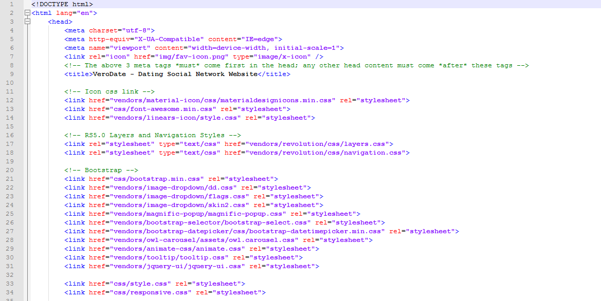
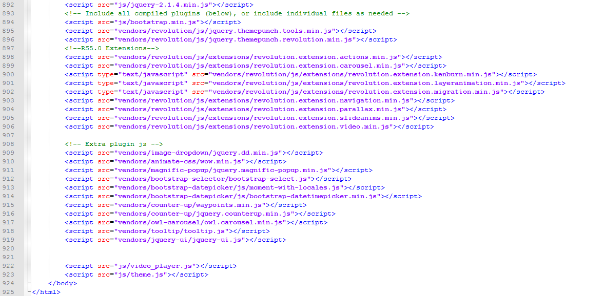

Thank you for purchasing my theme. If you have any questions that are beyond the scope of this help file, please feel free to email via my user page contact form here. Thanks so much!
The html template uses Bootstrap 4 with valid HTML5 tags. This theme is a responisve layout with one column. All of the information in content area is nested within a class and comes with predefined classes.
Header :

Fotter:

We build Dating HTML Template with very compatible CSS like SASS. It is the most mature, stable, and powerful professional grade CSS extension language in the world. You can edit or customize very essily. :)
This theme imports three Javascript files.
[some Javascript goes here...along with an general explanation] [some Javascript goes here...along with an general explanation] [some Javascript goes here...along with an general explanation]
[some Javascript goes here...along with an general explanation]
Once again, thank you so much for purchasing this theme. As I said at the beginning, I'd be glad to help you if you have any questions relating to this theme. No guarantees, but I'll do my best to assist. If you have any queries, please feel free to contact us at Support Center.
support@gmail.com
weThemez